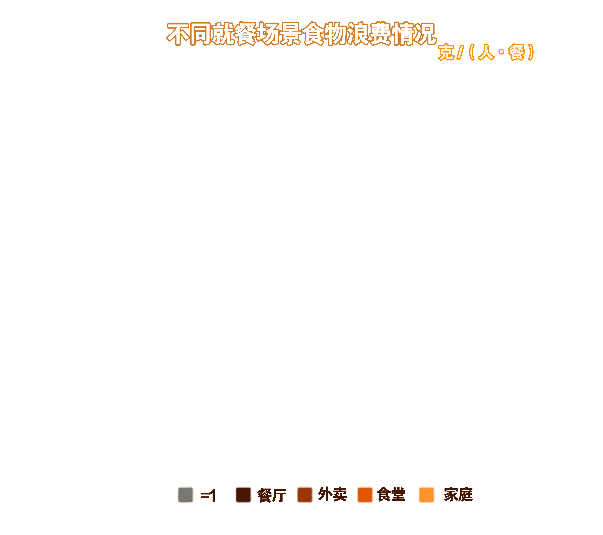
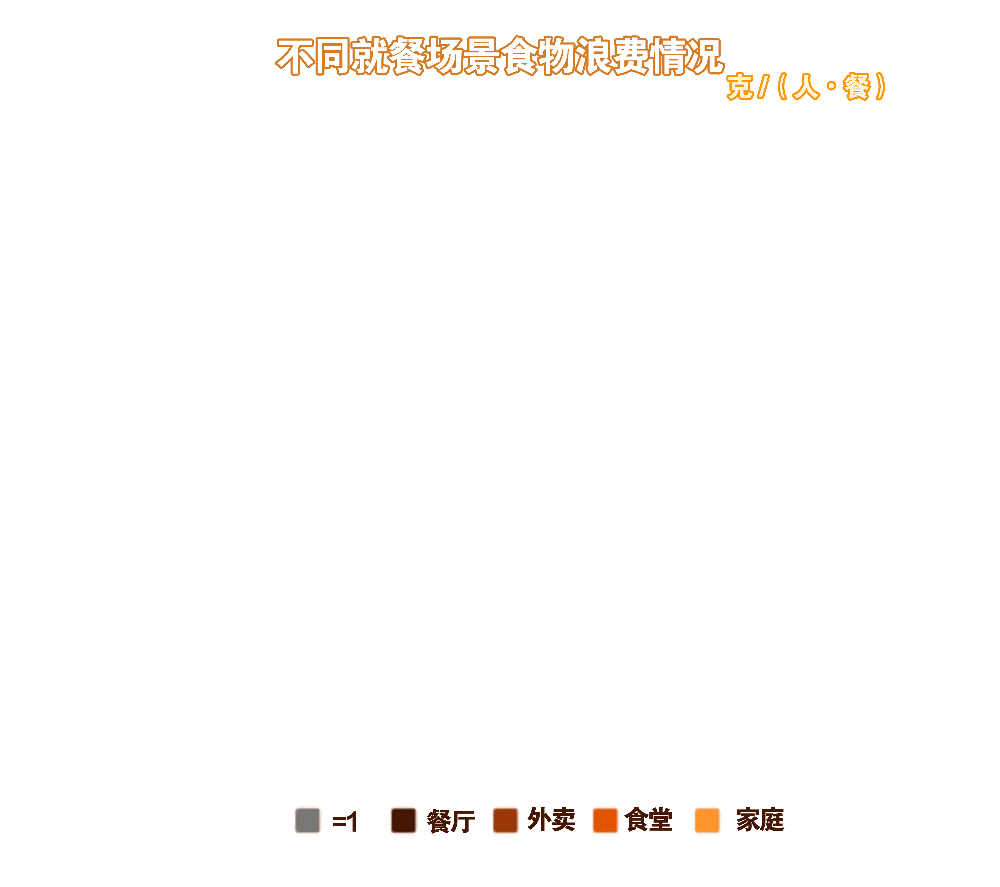
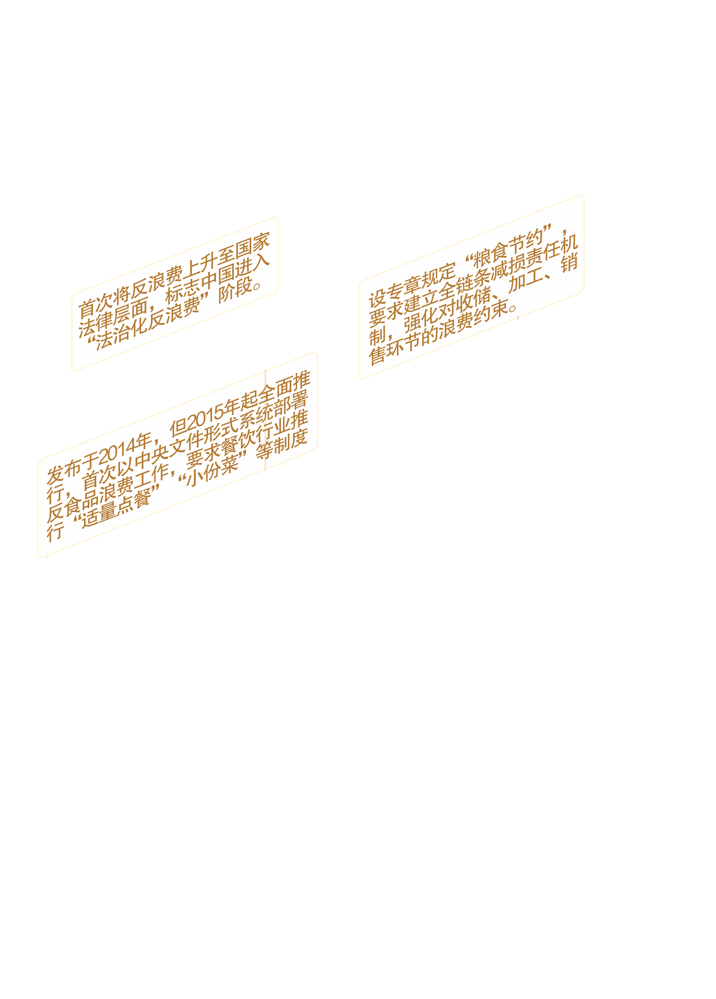

有关机构估算
每年损失浪费食物超 22.7%
约 9200 亿斤
挽回一半够 1.9 亿人 吃一年
餐饮浪费更是全球性问题
联合国粮农组织报告显示全世界每年浪费食物达 13 亿吨
占粮食生产总量 约三分之一
粮食关乎人类生存发展
全球正面临严峻的食物浪费挑战

 



在触目惊心的粮食浪费数据背后
从生产到消费各环节的浪费种类
正勾勒出亟待关注的损耗图谱——收割遗落、仓储霉变、加工丢弃、餐桌剩余
不同形态的浪费正蚕食着粮食资源。


面对浪费的消耗，人类并非束手无策
官方的宣传、立法、政策与制度
正是我们主动塑造粮食系统未来的核心工具

点击图片旋转
通过“光盘行动”“反对浪费”“小碗菜”关键词搜索人民日报、光明日报、央视网、新华社、北京青年报、新京报，共计得到354条数据。354条数据背后是官媒对粮食浪费的深切关注和大力号召。
